AI Tool Usage & Process
A detailed look at how we used Claude across two distinct workstreams — building the agentic research system and building this website — and what each experience taught us.
Workstream 1
Experience with Claude When Creating the Agentic System
Claude proved to be an exceptionally capable guide through the creation of our multi-agent research pipeline. The built-in human-in-the-loop dynamic meant that every error that surfaced during development became a concrete learning opportunity rather than a setback. We treated each failure as a signal to tighten our understanding of what the system was actually doing — and Claude made those feedback loops fast.
A foundational principle we discovered early was that every agent in a pipeline requires its own iteration cycle, and it is critical not to test on too large a dataset at the outset. Starting small — with minimal, well-understood inputs — allowed us to isolate where things broke before scaling up. This discipline saved us significant time and kept debugging tractable.
What we changed during the iteration process
We optimized the Synthesis Agent several times because it was producing overly general, low-specificity output. What became clear through careful diagnosis was that the root cause lay upstream: the Visualization and Analyzing Agents were not producing sufficiently precise output in the first place, and the Synthesis Agent was simply propagating that imprecision forward. Fixing the problem at its source resolved the downstream symptoms.
We also expanded the Research Agent's set of web sources, because the original input channels did not cover enough information to support the depth of analysis we needed. Broadening the input surface significantly improved the quality of the agent's outputs across all downstream stages.

Workstream 2
Experience with Claude When Creating the Webpage with GitHub
Working with Claude to build this website and manage the GitHub workflow surfaced a different category of challenges. Insufficient framing in our early prompts repeatedly led to inadequate context gathering — Claude would proceed without fully understanding the constraints we were working within, and corrections had to happen after the fact rather than before.
We also encountered misleading tool recommendations that stemmed from an incomplete understanding of the actual functionalities available in our environment. This resulted in wasted time and unnecessary confusion as we worked to untangle what Claude had suggested from what would actually work. Related to this, Claude's knowledge of its own product ecosystem proved at times to be assumption-based rather than grounded in verified capability — something we had to account for through independent verification.
A recurring pattern was information overload: when we asked open-ended questions, Claude would present multiple parallel options without clearly prioritizing among them. This shifted cognitive load back to us in ways that were not always efficient. The broader dynamic was reactive rather than proactive — Claude responded well once problems surfaced, but rarely anticipated them in advance. From these observations, two structural principles emerged: safety by design (build in a visual sandbox and maintain a human in the loop at every stage), and disciplined context management (finite tokens make session boundaries a real constraint that must be planned around).
What we changed during the iteration process
We introduced a visual sandbox because errors on a webpage are immediately visible — far easier to validate than reviewing raw text output. Seeing a change rendered in real time against the intended design made it trivially fast to confirm whether a solution was correct or not.
We also added a decision summary after every significant step, consolidating design choices, identified conflicts, and open questions into a single reference table. This kept the whole team aligned on what had been decided and why, and reduced the risk of conflicting changes accumulating unnoticed over time.

AI is strong as an architect and explainer, but weaker as an anticipator. Claude responds well to errors once they occur — but too rarely prevents them beforehand.
Our assessment
Tool Critique
Claude is, on balance, very useful. We were able to complete work in six to seven hours that would normally have taken us many times longer. The more explicit and consistent we were in formulating our instructions, the more likely the outcome aligned with our expectations. This forced us to engage deeply with every single change — to think through what we were asking for before we asked — and the discipline paid off in output quality. At the same time, the level of oversight required made the process somewhat exhausting at times. Precision prompting is a skill, and developing it takes sustained effort.
As already noted, the context window limitations of Claude are extremely cumbersome, especially when setting up and operating multiple larger systems in parallel. Session management — knowing when to start fresh versus when to continue — became a non-trivial part of our workflow, and getting it wrong had real costs in the form of context drift and accumulated misunderstandings.
The limitations also became apparent in the design of the interactive 3D element on the homepage. While it functioned, it never reached the quality or visual sharpness of the reference we had in mind. In that case, a specialized AI design tool would have been the more appropriate choice. Claude is a generalist, and in precision visual design, the gap between a generalist and a specialist is visible.
During the research phase, we had to exercise particular care when reusing a chat session to avoid data being misinterpreted across contexts. Knowing when it is better to start a new session versus continuing an existing one with its established skills and embedded information proved to be a learned skill of its own. At times, continuity led to incorrect analytical conclusions — conclusions that were caught only because multiple team members independently examined the same topic. The implementation of the multi-agent research system led to a significant improvement here: structured pipelines are more robust than ad-hoc conversations for tasks that demand consistency and precision.
AI is a highly effective tool for research and analysis when it is set up correctly — but that setup requires careful, intentional planning of the research and analysis architecture. The advantage of these tools became particularly evident in creative work: visualizing complex information is greatly simplified and accelerated, enabling a quality and density of presentation that would have been far harder to achieve through manual effort alone.
Looking back
Team Reflection
This project revealed a clear and consistent division between what AI does well and what requires human judgment. AI acted as an architect and accelerator — structuring problems, generating options, executing repetitive tasks at speed. Humans handled validation, refinement, and the final decisions about what was correct and what was good. Neither role was sufficient without the other, and the human-in-the-loop approach proved essential throughout. Errors became learning opportunities precisely because a person was always in a position to catch them and correct course.
One of our most valuable insights was that problems often originated upstream from where they first became visible. When an output from one agent was wrong, our first instinct was to fix that agent — but in many cases, the actual cause lay one or two stages earlier in the pipeline, with a component that was producing imprecise output the downstream stage could not compensate for. This taught us to think in systems: to trace causality back to its source rather than treating symptoms at the point where they surfaced.
We also confirmed through direct experience that AI is fundamentally reactive rather than proactive. It responds well once a problem is defined and placed in front of it, but it does not reliably anticipate problems before they arise. This required us to introduce structural compensations — the visual sandbox, the decision summary tables — that gave us visibility into what was happening before issues escalated into failures.
The cognitive load was higher than we anticipated. While AI significantly accelerated our work on individual tasks, the meta-work of managing the AI — writing precise prompts, reviewing outputs critically, managing session context, knowing when to push and when to restart — was itself demanding. This is a real cost that tends to be underestimated in practice, and it should be planned for explicitly rather than assumed away.
Finally, the clearest capability boundary we encountered was in specialized tasks. AI was strong in research, analysis, structuring, and explanation. It was weaker where precision and aesthetic judgment were paramount — tasks where a domain-specific tool would have delivered higher quality output with less iteration. Understanding this boundary is part of using AI well.
Effective AI use is not about automation, but about orchestration. Success depended on how well we combined human judgment with AI capabilities — leveraging speed and scalability while maintaining control, critical thinking, and intentional design.
Reference materials
Project Library
Source documents, planning artefacts, and diagrams produced during the capstone — available to open or download directly.